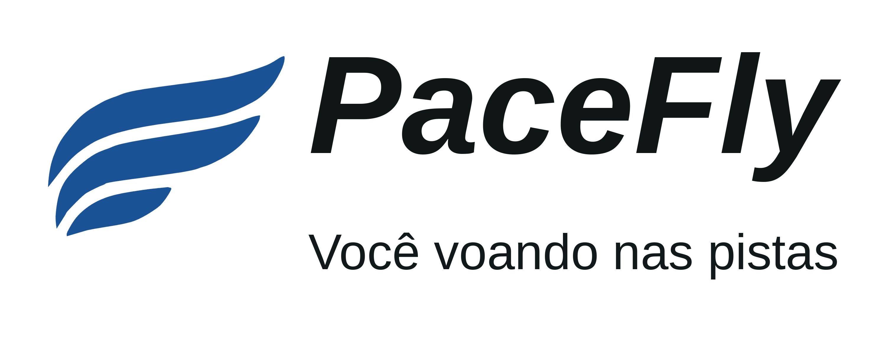

Calendário 2027
// Temporada 2027 · Norte de Santa Catarina
Corra em 2027.
As primeiras provas da região já têm data. Veja o calendário completo e comece a planejar o próximo ano.
Joinville e Norte de SC
pacefly.com.br/calendario-2027